Retencja
Opady
Susza
Analiza
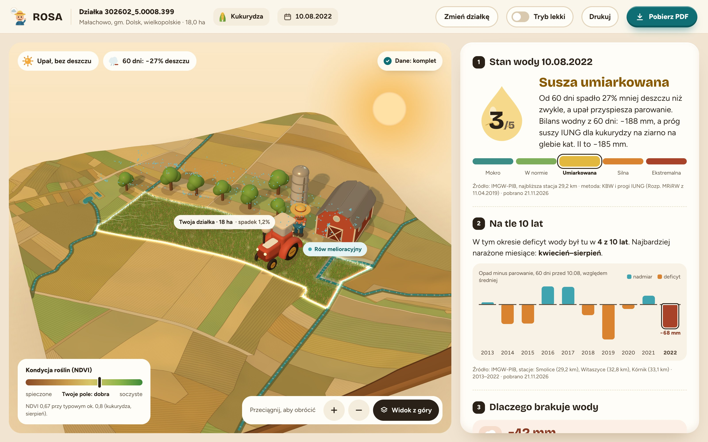

Ile wody ma Twoje pole — i jak ją na nim zatrzymać. Dla każdej działki w Polsce, w kilka sekund.

Susza rolnicza wraca co roku. W 2018 r. dotknęła prawie 83% gmin, a pomoc suszowa kosztowała 1,5 mld zł. W 2026 r. już wiosną susza była we wszystkich województwach.
Polska zatrzymuje tylko ok. 7,5% wody z opadów, Hiszpania ok. 40%. Tanie sposoby na zatrzymanie wody na polu są znane, ale nikt ich nie podpowiada wtedy, gdy mają sens.
Dane istnieją, ale są rozproszone w pięciu instytucjach, a monitoring suszy mówi o gminie, nie o Twojej działce.
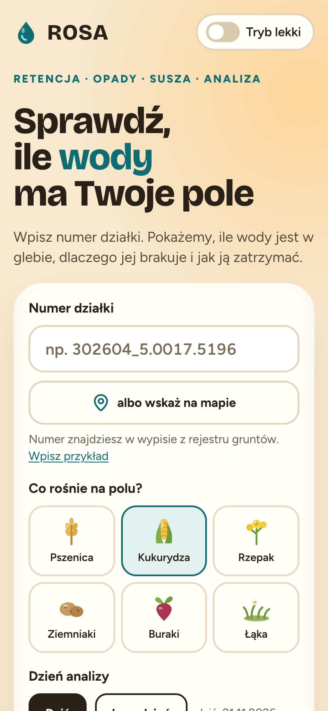
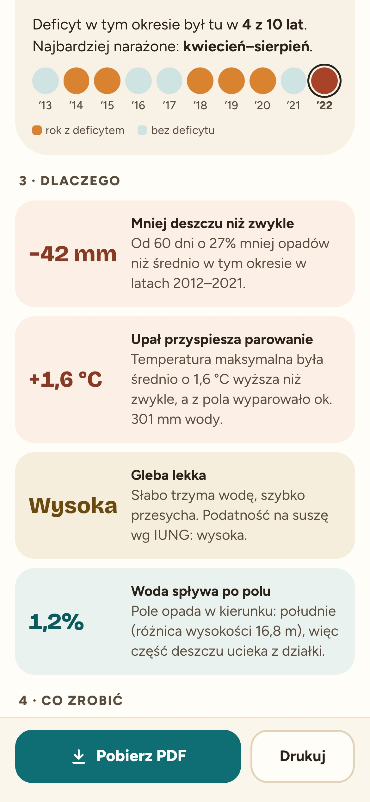
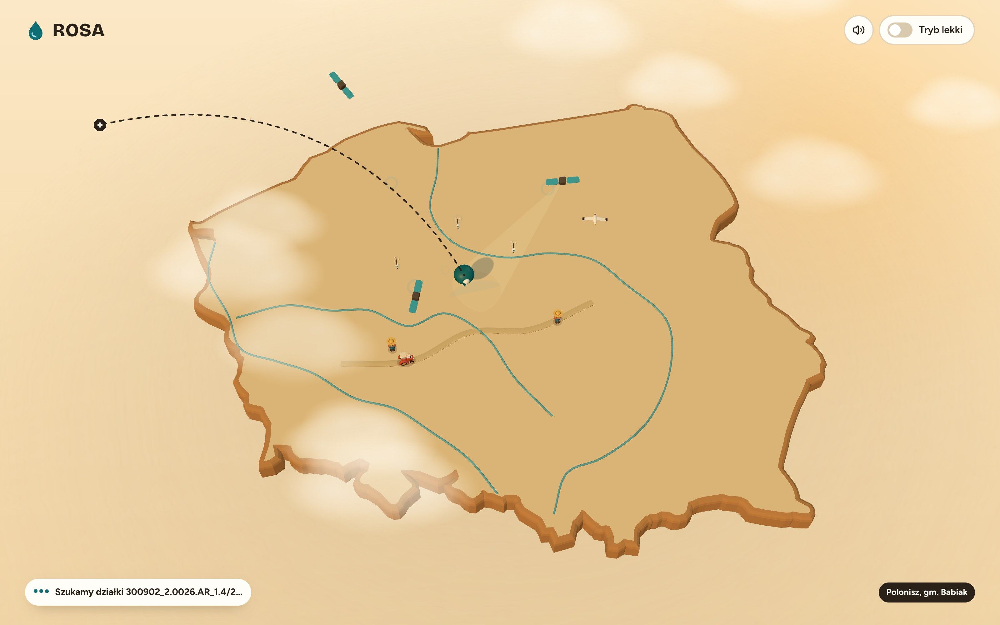
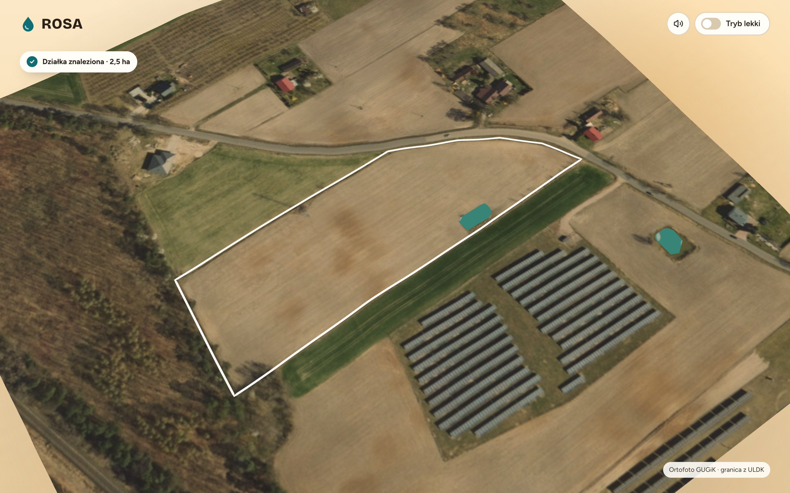
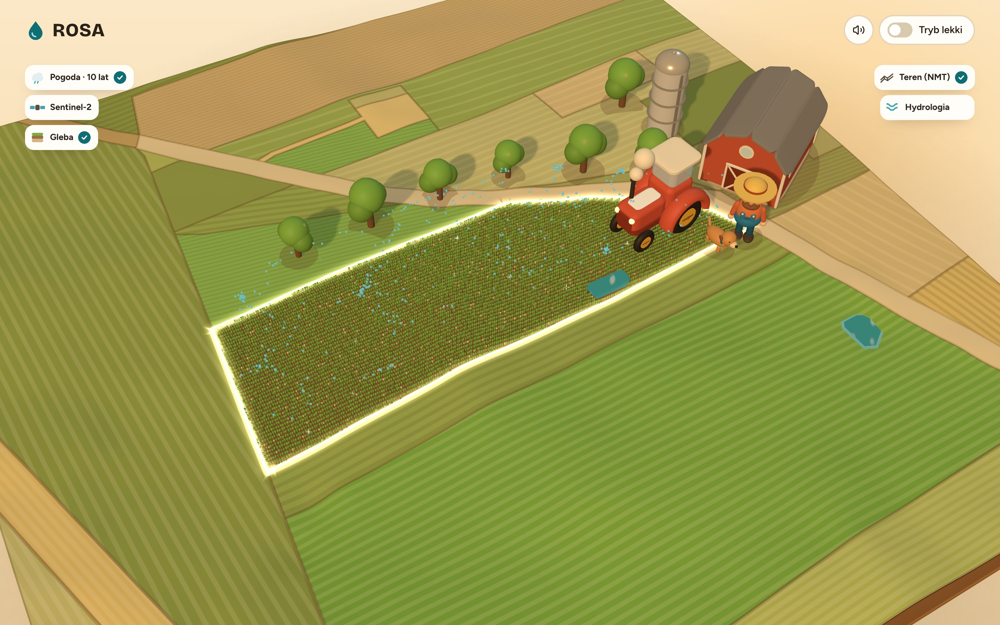
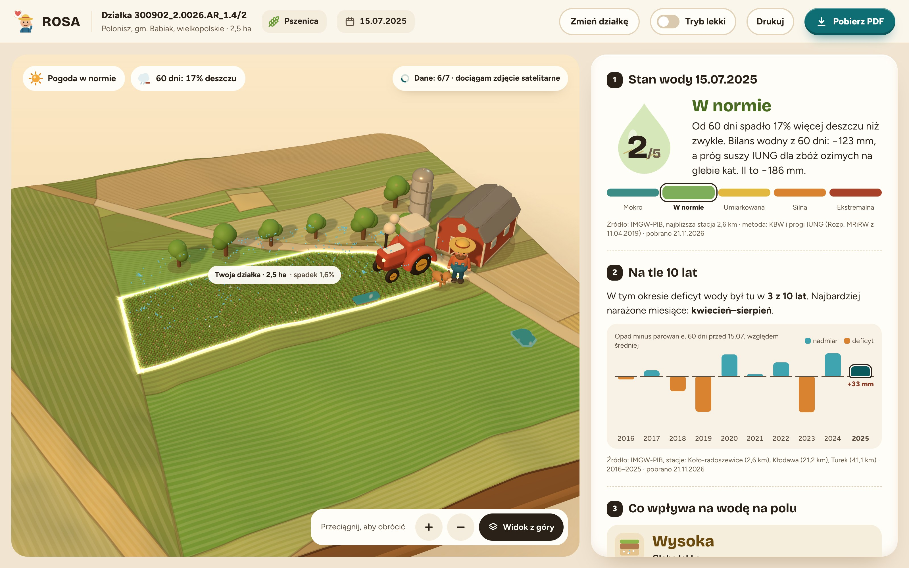
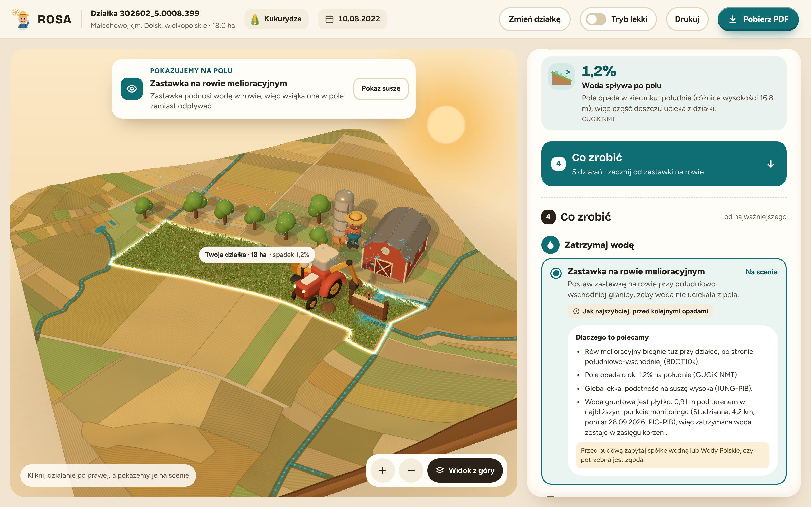
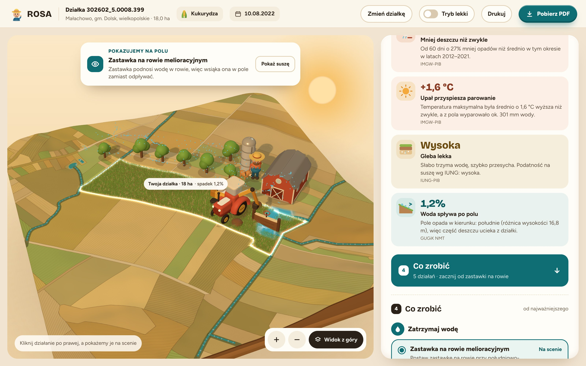
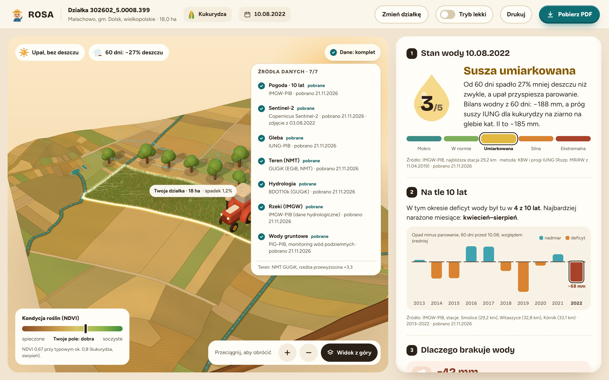
53 346 porównań · 39 gmin · 2020–2025 · F1 0,65
ok. 0,15 s z cache · PDF 0,5–1,7 s
deterministyczny silnik regułowy: ten sam input = ten sam wynik
wieś, adres z numerem, „Małachowo 399” albo ID działki
jedno ujęcie od Polski do pola, czeka na dane
skala 1–5, metoda z rozporządzenia MRiRW
NDVI vs typowe dla uprawy i miesiąca
wodowskazy IMGW, monitoring PIG-PIB
woda → gleba → nawadnianie, z uzasadnieniem
plan działki, wynik, źródła i licencje
działa na słabym łączu i starszym sprzęcie
teren, rowy, sąsiedzi; pinch, obrót, zoom
„Dane: komplet” i „Czego nie wiemy”
IMGW co 5 min, archiwa i działki odświeżane w tle
bez danych osobowych, tylko dane publiczne
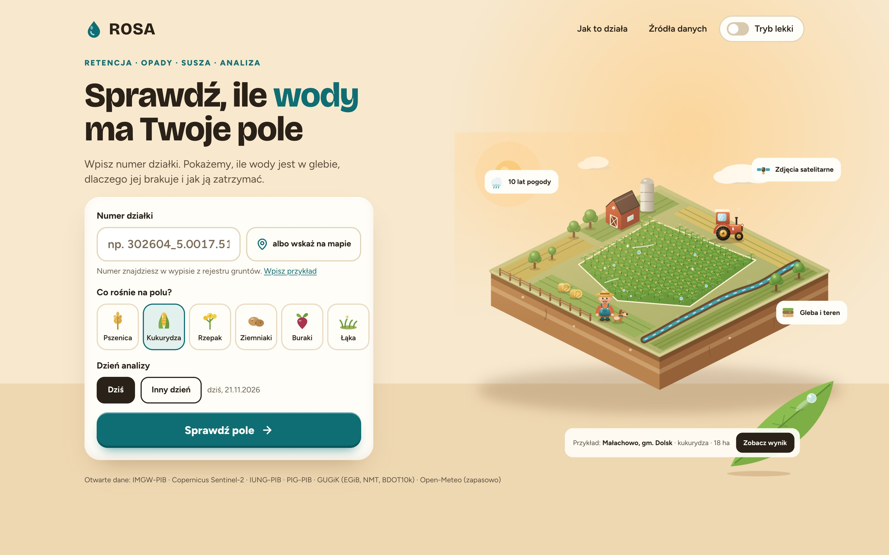